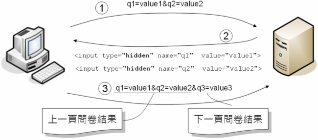

在HTTP協定中，伺服器是個健忘的傢伙，對每次的請求都一視同仁，根據請求中的資訊來執行程式並回應，每個請求對伺服器來說都是新的訪客請求。
如果你正在製作一個網路問卷，由於問卷內容很長，因此必須分作幾個頁面，上一頁面作答完後，必須請求伺服器顯示下一個頁面。但是在HTTP協定中，伺服器 並不會記得上一次請求的狀態，那上一頁的問卷結果要如何保留（其實伺服器根本不會記得這次請求是之前的瀏覽器發送過來的）？
既然伺服器不會記得兩次請求間的關係，那就由瀏覽器在每次請求時「主動告知」伺服器多次請求間必要的資訊，伺服器只要單純地處理請求中的相關訊息即可。
隱藏欄位（Hidden field）就是主動告知伺服器多次請求間必要資訊的方式之一。以問卷作答的範例來說，上一頁的問卷答案，可以用隱藏欄位的方式放在下一頁的表單中，如此發送下一頁表單時，就可以一併發送這些隱藏欄位，每一頁的問卷答案就可以保留下來。
那麼上一次的結果如何成為下一頁的隱藏欄位呢？在客戶端可以直接在瀏覽器上使用JavaScript製作這個功能，或是將上一頁的結果發送至伺服器，由伺服器將上一頁結果以隱藏欄位的方式再回應給瀏覽器。

Rails的一些輔助方法，也會產生隱藏欄位，像是使用使用form_tag或form_for方法，會自動產生隱藏欄位發送authenticity_token參數。
在Rails後，可以使用hidden_field_tag輔助方法來產生隱藏欄位，以下這個範例是個簡單的示範，程式會有兩頁問卷，第一頁的結果會在第二頁成為隱藏欄位，當第二頁發送後，可以看到兩頁問卷的所有答案。
<%= form_tag "questionaire" do %>
<% if params[:page] == "Page1" %>
<%= label_tag "q1", "Question 1: " %><%= text_field_tag "a1" %><br>
<%= label_tag "q2", "Question 2: " %><%= text_field_tag "a2" %><br>
<%= submit_tag "Page2", :name => "page" %>
<% elsif params[:page] == "Page2" %>
<%= label_tag "q3", "Question 3: " %><%= text_field_tag "a3" %><br>
<%= hidden_field_tag "a1", params[:a1] %>
<%= hidden_field_tag "a2", params[:a2] %>
<%= submit_tag "Finish", :name => "page" %>
<% elsif params[:page] == "Finish" %>
* A1: <%= params[:a1] %><br>
* A2: <%= params[:a2] %><br>
* A3: <%= params[:a3] %>
<% end %>
<% end %>
由於程式只使用一個樣版檔案，所以利用一個page請求參數來區別該顯示第幾頁問卷。page請求參數的值為"Page1"時，顯示第一頁問卷題目；為"Page2"時，顯示第二頁問卷題目，並將前一頁的答案以隱藏欄位的方式回應給瀏覽器，以便下一次可以再發送給伺服器；page請求參數的值為"Finish"時，應用程式將顯示問卷的所有答案。
在第二頁問卷顯示時，會傳回以下的HTML內容：
<!DOCTYPE html>
<html>
<head>
<title>Bookmark</title>
<link href="/assets/application.css?body=1" media="screen" rel="stylesheet" type="text/css" />
<link href="/assets/bookmarks.css?body=1" media="screen" rel="stylesheet" type="text/css" />
<link href="/assets/test.css?body=1" media="screen" rel="stylesheet" type="text/css" />
<script src="/assets/jquery.js?body=1" type="text/javascript"></script>
<script src="/assets/jquery_ujs.js?body=1" type="text/javascript"></script>
<script src="/assets/bookmarks.js?body=1" type="text/javascript"></script>
<script src="/assets/test.js?body=1" type="text/javascript"></script>
<script src="/assets/application.js?body=1" type="text/javascript"></script>
<meta content="authenticity_token" name="csrf-param" />
<meta content="qoTzbpI45Tw7IXiy/eezoX/29SS652ZBA6hl+rxtsLA=" name="csrf-token" />
</head>
<body>
<form accept-charset="UTF-8" action="/test/questionaire" method="post">
<div style="margin:0;padding:0;display:inline">
<input name="utf8" type="hidden" value="✓" />
<input name="authenticity_token" type="hidden"
value="qoTzbpI45Tw7IXiy/eezoX/29SS652ZBA6hl+rxtsLA=" />
</div>
<label for="q3">Question 3: </label><input id="a3" name="a3" type="text" /><br>
<input id="a1" name="a1" type="hidden" value="Answer 1" />
<input id="a2" name="a2" type="hidden" value="Answer 2" />
<input name="page" type="submit" value="Finish" />
</form>
</body>
</html>
使用隱藏欄位的方式，顯然地在關掉網頁後，就會遺失先前請求的資訊，所以僅適合用於一些簡單的狀態管理，像是線上問卷。由於在檢視網頁原始碼時，就可以看到隱藏欄位的值，因此這個方法不適合用於隱密性較高的資料。